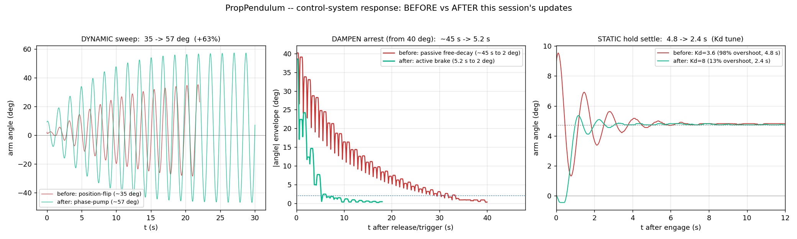

Can classical PID and energy-based control strategies effectively control a nonlinear physical oscillator with real sensor noise, actuator latency, and friction?
Textbook control theory teaches linear, noise-free, friction-free systems. Real physical systems have sensor noise, actuator deadbands, nonlinear dynamics, and a fundamentally limited actuator. The aeropendulum — a propeller on a ~1 m arm with real-time feedback — is a testbed for what control theory survives contact with reality.
The actuator is the crux: the propeller is push-only — it can shove the arm in one rotational direction but never pull. That single constraint shapes everything. It makes true critical damping impossible, biases every pumped swing, and means the binding limit is almost always thrust, not the controller.
A sim-to-real control platform
The rig runs as a closed sim-to-real loop: the Arduino owns the fast real-time control loop and every safety limit, while a Python host wraps it with the slow outer loop — flashing firmware, streaming and logging telemetry, fitting a digital twin, optimizing controllers in simulation, then deploying and validating on the hardware. One validated twin (natural frequency, linear + quadratic aerodynamic drag, the motor thrust curve, and its spin-up lag) now reproduces the rig across its full envelope — free-decay ring-down, static hold, and large-amplitude pumping — so a new control idea can be designed and stress-tested in simulation before it ever touches the motor.
Three control modes — optimized
| Mode | Strategy | Result |
|---|---|---|
| Static hold | Feedforward + rate damping | Holds a steady angle on a near-constant thrust. The robust law is feedforward + damping with no proportional term — proportional gain plus the deadband and actuator lag self-pumps into a limit cycle. |
| Dynamic sweep | Phase-timed energy pump | A push timed to the swing — led ~40° early to beat the motor's spin-up lag — reaches 57°, up from ~35° for the naive method, on the same hardware. Self-starting and amplitude-regulating. |
| Active damping | Energy-armed velocity brake | Arrests a 40° drop in ~5 s — roughly 9× faster than the passive ring-down — buzz-free, hanging at true zero. An instantaneous-energy arm gate stops a push-only brake from latching on near rest. |
Key result: timing, not thrust
The headline finding is that the swing ceiling was never the motor — it was the timing of the push. The original method maxed near 40°; phasing the same thrust to the favorable half of each swing, fired slightly early to compensate the propeller's spin-up lag, reached 57° with no extra power. Pushed to their walls, all three objectives then converged on one honest conclusion: the controller is wrung out, and every remaining limit is the actuator — which points to a stronger or bidirectional motor as the one lever that moves all three at once.

System architecture
Sensing & estimation
- AS5600 magnetic encoder (12-bit) — absolute angle
- MPU6050 IMU gyro — angular velocity
- Circular-mean tare, wrap-safe EMA angle filter
- Bias-correcting complementary velocity estimate
Control
- Static: feedforward + rate damping (no P term)
- Dynamic: phase-timed pump toward an amplitude target
- Damping: energy-armed velocity brake
- Energy-equivalent amplitude gating, anti-windup, slew limit
Digital twin
- Validated across free-decay, static, and pumping
- ωₙ, linear + quadratic drag, motor curve + lag
- Held-out validation; sim-first controller design
Platform
- Arduino fast loop + Python slow outer loop
- flash → log → fit → optimize → deploy → validate
- Custom 3D-printed enclosure (18+ CAD iterations)
Project Documents
Related Work
A mathematical treatment of nonlinear dynamics, stability analysis, and phase-space methods applied to physical systems.
Interactive simulation of pendulum dynamics, phase portraits, and bifurcation diagrams including the driven pendulum.